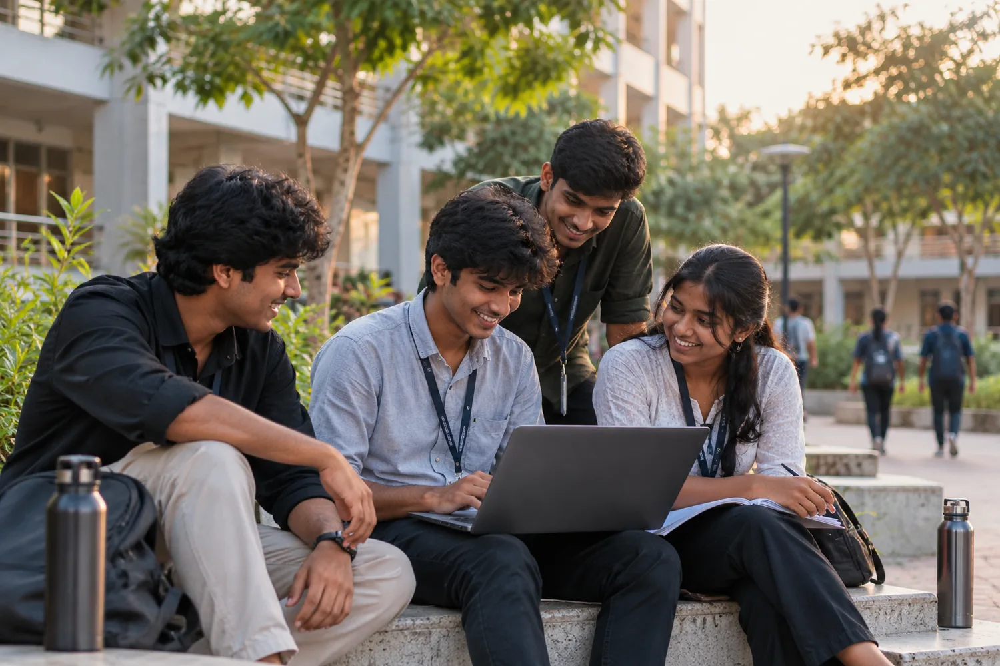

Understand
Clarify the problem, expected outcome, and important details before starting.
A SMALL INTRODUCTION
Choose a side of my world. The story changes to suit what brought you here.
No maze. No effects to fight. Just two ways to say hello.
SOFTWARE ENGINEER · PLACEMENT PROFILE
Aspiring Software Engineer | ECE Undergraduate
Graduating in 2027 · Open to placement opportunities
I build practical applications, work through problems carefully, and keep learning across Java, data structures, and web technologies. I’m looking for a team where I can contribute, grow, and build reliable software.
WHAT HAPPENS WHEN YOU HIRE ME
I’m at the beginning of my career, and I bring curiosity, ownership, and a willingness to learn from the team.
Clarify the problem, expected outcome, and important details before starting.
Split the task into smaller steps and work through the logic carefully.
Apply programming fundamentals and turn the idea into a working solution.
Test what I can, review the result, and learn from issues.
Communicate progress, take feedback, and keep improving with the team.
A PRINCIPLE I TRY TO KEEP
Good work is rarely one perfect first attempt. I learn by understanding the task, trying a clear approach, checking the result, and being open to a better idea.
As a fresher, I see feedback as part of the build—not as the end of it.
TOOLS I’M LEARNING AND USING
Grounded in my coursework, projects, and internship experience.
FOUNDATIONS FIRST
My core focus is building strong programming fundamentals while learning how an application is shaped by its interface, data, and underlying logic. I’m continuing to deepen these skills through coursework and hands-on projects.
SELECTED ACADEMIC WORK
WHAT THESE PROJECTS TAUGHT ME
Across management systems and image processing, I’ve had to think about how information is organized, how a user finds the next action, and how to make a result clearer. These projects are a foundation I want to keep improving—not a claim that I know everything already.

Project cover photos are AI-generated illustrative artwork for each project theme, not screenshots of the actual software. Public repository links are provided where available; the MATLAB project remains an academic project entry without a linked public repository.
EDUCATION & EXPERIENCE
M. Kumarasamy College of Engineering, Karur
CGPA: 7.45 / 10 · Till 5th semester
Worked on digital design and verification activities; designed and verified digital logic circuits using Verilog HDL.
Higher Secondary: 79.3% · Secondary: 80%
PLACEMENT PROFILE
I’m a 2027 graduate looking for an entry-level opportunity where I can strengthen my software engineering fundamentals, contribute to real work, and keep growing with a team.
Graduate Software Engineer · Java Developer Trainee · Application Development
Java, OOP, DSA, SQL, web technologies, and basic database integration
Served as team lead for academic project work and collaborated on practical application ideas.
CREDENTIALS · RECOGNITION · PUBLICATION
Certificates, training, research, and recognition—with original document links where available and public LinkedIn activity for the other entries.
A STANDARD I KEEP
I prefer original records over decorative badges. The certificate links point to the matching documents, while the IEEE link leads to the published paper record.
THE PERSON BEHIND THE PROJECTS
I like discovering how things work, asking “what if?”, and turning an idea into something I can actually try. I’m learning as I go, and I’m happiest when a confusing problem finally makes sense—or when a team gets a little closer to its goal.
BEYOND A JOB TITLE
I don’t think a person can be summed up by a list of skills. I’m a student, a teammate, and someone who enjoys seeing an idea slowly become clearer. Some days progress is a working feature; some days it is understanding a concept that seemed difficult yesterday.
The best part is sharing that progress—explaining what worked, learning from somebody else’s approach, and being able to laugh at the messy middle instead of expecting everything to be perfect immediately.
My happy side?
Celebrate the small wins, share ideas, learn from people around me, and never be too serious to laugh at a bug after it’s fixed.
THE WAY I LIKE TO GROW
A question, an idea, or a small detail can be the start of something interesting.
Take a first step, make a small experiment, and learn from what happens.
Talk it through, listen to another perspective, and celebrate the progress together.
THE LITTLE THINGS THAT FEEL LIKE ME
A longer look at how I learn, work with people, and try to keep everyday life positive.
A WORK IN PROGRESS — IN A GOOD WAY
I enjoy the point where a question starts to make sense. It might happen after reading, asking someone to explain an idea differently, testing a small example, or returning to a problem with a clearer head. That “oh, now I get it” moment is a reward of its own.
I also believe that a good day doesn’t have to be dramatic. Finishing a task, helping a teammate understand something, learning a new shortcut, or finally fixing one stubborn bug can be enough reason to feel good about the progress.
A SMALL PERSONAL PROMISE
That is the direction I want to keep moving in: learn honestly, work with care, appreciate the people around me, and make room for a little humour when things don’t go to plan.
The details here are written to reflect the learning and teamwork already mentioned in my résumé. Add your actual interests—music, favourite food, sports, travel, or weekend habits—when you’re ready to make this even more personal.
SMALL THINGS, REAL GROWTH
I’m still finding my rhythm, learning what works, and getting a little better through every project. The fun is in the process as much as the finish line.
MY CORNER OF THE MAP
Home base: Karur, Tamil Nadu, India. My journey is growing through college, hands-on projects, and new people and ideas along the way.
See Karur on the map ↗Karur is the place I call home while I learn, build projects, and prepare for the next step in my career.
EASY CONVERSATION STARTERS
You don’t need a perfect introduction. I’m always happy to talk about an idea that might become a project, a new concept that finally clicked, or the lessons we pick up while working with others.
01 An idea that could become a useful project.
02 New technologies and the things we are still learning.
03 College projects, teamwork, and the lessons in between.
04 How to untangle a problem that first looked confusing.
05 Your current curiosity—technical or otherwise.
Want to make this page even more personal? Add your actual favourite music, foods, activities, weekend plans, and fun facts in the Curious section of index.html. They’re intentionally not guessed for you.